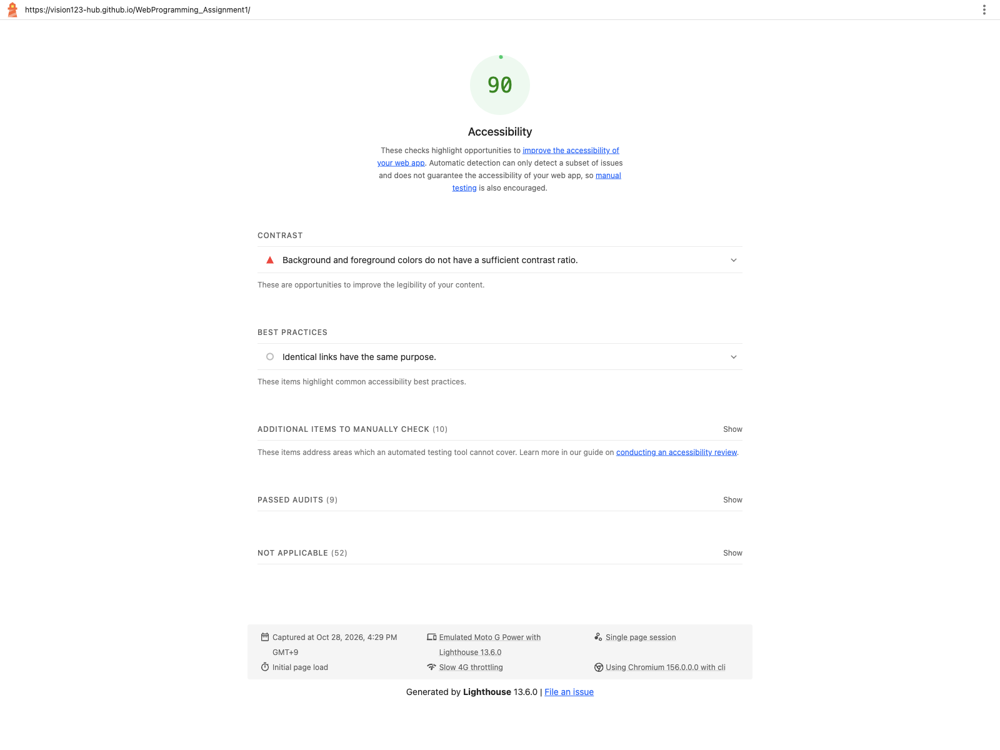
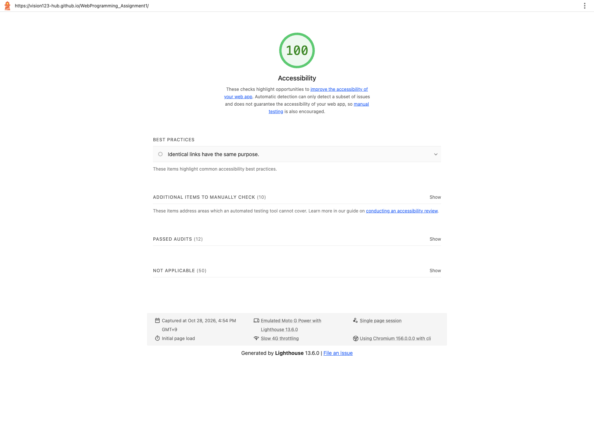

Week 9: Website Accessibility Audit
Introduction
I used Lighthouse to check the accessibility of my course website. The before and after audits were run on the same live homepage with Lighthouse 13.6.0, mobile emulation, and simulated throttling.
Website audited: Web Programming Assignments.
Original score

Accessibility fixes
- Homepage introduction contrast: Lighthouse flagged the introduction paragraph because its text and background did not have enough contrast. I darkened the text color so it is easier to read.
- Week 3 Task 5 link contrast: The same contrast audit also flagged this link while its colors changed. I kept its movement effect but stopped the text and background colors from transitioning through low-contrast combinations.
- Main landmark: Lighthouse reported that the original Week 8 pages did not have a main landmark. I added a semantic
<main>region to those pages so assistive technology can identify the primary content.
Audit detail: The saved initial reports show two failed Lighthouse audit categories, not three different audit names. The contrast category listed two affected homepage elements, and the missing-main-landmark category was reported on four Week 8 pages. The three items above describe three verified problem instances and their fixes without counting them as three separate audit categories.
Final score

Skip link and conclusion
I added a “Skip to main content” link to the site. I tested it using the keyboard: Tab reaches the link, and Enter moves focus to the main content.
The homepage score increased from 90 to 100. The screenshots above are the saved Lighthouse report captures, and both audits used the same URL and settings.